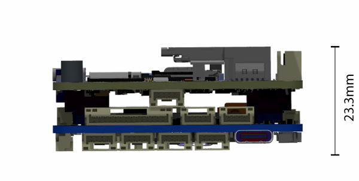
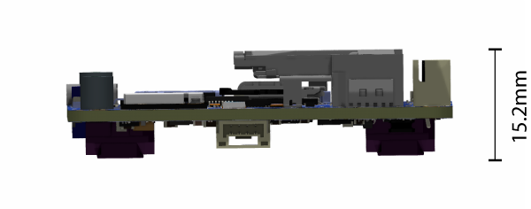

EchoPilot AI Documentation¶
Overview¶
The EchoPilot AI is a highly integrated vehicle control and edge computing system designed to power next-generation uncrewed systems. The EchoPilot AI supports computer vision, machine learning, autonomy, artificial intelligence and other advanced edge computing needs. The EchoPilot AI implements a STM32H7-based autopilot compatible with the popular Ardupilot and PX4 projects, and uses Pixhawk open-hardware connectivity standards.
The power of an advanced autopilot is seamlessly combined with high-performance computing (including AI and machine learning), IP networking, cloud connectivity and flexible low-latency hardware accelerated video encoding.

Autopilot Sensors
| Function | Part Number |
|---|---|
| IMU 1 | ICM42688P |
| IMU 2 | ICM42688P |
| IMU 3 | ICM42688P |
| Barometer 1 | MS5611 |
| Magentometer | PNI RM3100 |
| Add-On INS | VectorNAV VN-X00 (optional) |
| Function | Part Number |
|---|---|
| IMU 1 | ICM42688P |
| IMU 2 | ICM42688P |
| IMU 3 | ICM42688P |
| Barometer 1 | ICP-20100 |
| Barometer 2 | ICP-20100 |
| Magentometer | PNI RM3100 |
| Add-On INS | VectorNAV VN-X00 (optional) |
The hardware is configured into a two board stack. The upper board is the EchoPilot AI board, and it contains the flight management unit, peripherals, sensors and Nvidia Jetson interface. The lower board is the Carrier Board, and it handles power regulation and connectors. Two high-density FX23L-80S-0.5SV 80-pin board-to-board connectors are used between the two boards.
This design philosophy achieves multiple goals:
- For integrated vehicle solutions, it is often desired to design a custom carrier board to add additional components, minimize cables/wiring and integrate power distribution. The EchoPilot AI's design allows you to optionally design a custom carrier board (using the provided Carrier Board as a reference design).
- A stacked solution minimizes X-Y size in exchange for moving into the Z axis, which is an acceptable compromise for most uncrewed vehicles.
- Moving the switching power regulators to the Carrier board reduces noise near the sensitive sensors on EchoPilot AI board and reduces the thermal load of the EchoPilot AI mainboard.
- A stacked design is more future proof, as peripherals can often be added to the Carrier Board without a re-design of the EchoPilot AI main board.
Quick Start Guide¶
Accessing the Jetson via the console¶
These instructions assume you have a Jetson module that is already flashed. If you have a new Jetson module that is not flashed, please see Building and Flashing a Jetson with L4T instructions.
Warning
Do not run the Jetson SOM without a heatsink. The module may be damaged or performance throttled. See connecttech.com for recommended active and passive heatsinks.
- Assemble the EchoPilot AI board with a Carrier Board, using 8mm standoffs between the two boards.
- If a Jetson Module is not already installed in the EchoPilot AI, install the module now.
- Attached a USB cable between your host computer and J7 (Console) on the Carrier Board

- In step 3, your host computer should have enumerated a virtual comm port. You will now need to find the name of the port.
Info
On Windows: Open Device Manager (Start → Control Panel → Hardware and Sound → Device Manager) Look in the Device Manager list, open the category "Ports", and note the COM port added USB Serial Port (COM?) (e.g., COM10).
On Linux: Run dmesg -w and then plug in unplug and replug in the USB cable. You should see the name of the device added, typically FTDI USB Serial device converter now attached to ttyUSB? (e.g., ttyUSB0).
Use a terminal program to connect to the Jetson's console at 115200 baud, 8N1.
Info
On Windows: We recommend Putty or TeraTerm.
On Linux: We recommend Picocom. Install with sudo apt-get install picocom. Use with picocom /dev/ttyUSB? -b 115200. To exit picocom, use Ctrl-a Ctrl-x.
Power the Carrier Board with 7-56VDC source capable of supplying up to 4A.
Warning
If using a bench supply with over-current protection, we recommend turning it OFF. The boot process requires short bursts of high current and over-current protection on some supplies will result in a failed boot.
You should now see the boot messages in your console, and once boot is complete, you will see a login prompt.
Note
The default username is echopilot and the default password is echopilot
Success
At this point you are logged into the Jetson and can begin configuring the network, installing applications, etc.
Connecting to the FMU via the USB connector¶
- Attach a USB cable between the host computer and the FMU USB connector (J7).
- Start a ground control application on the host computer such as QGroundControl or Mission Planner.
Info
QGroundControl: Will automatically connect.
Mission Planner: Select the appropriate COM port at the top right, 115200, then click CONNECT.
Board Components and Connectors¶
EchoPilot AI¶


Carrier Board¶


Pinouts¶
For EchoPilot AI Pinouts, refer to the EchoPilot AI Pinout Page.
For Carrier Board Pinouts, refer to the Carrier Board Pinout Page.
Jetson IO Availability¶
The following Jetson IO pins are brought out to the B2B connector J5 and are available for customer use:
Note
*Changes to the direction and functionality of these pins may be possible based on the Jetson pinmux configuration.
| Jetson Pin | Direction | B2B (J5) | Voltage | Default Use | Pin Description (Xavier) | Pin Description (Nano) |
|---|---|---|---|---|---|---|
| PIN 211 | O | 36 | +1.8V | Audio MCLK | AUDIO_MCLK | AUDIO_MCLK |
| PIN 212 | IO | 38 | +1.8V | Spare IO | GPIO3_PQ.01 | GPIO3_PV.01 |
| PIN 218 | IO | 37 | +1.8V | Spare IO | GPIO3_PCC.04 | GPIO3_PY.02 |
| PIN 126 | I | 74 | +3.3V* | Iridium Ring | GPIO3_PCC.00 | GPIO3_PI.02 |
| PIN 206 | I | 73 | +3.3V* | Iridium NA | GPIO3_PR.00 | GPIO3_PV.00 |
Note
*Pins 126 and 206 are level-shifted from 1.8V to 3.3V prior to the B2B (J5) connector via a TXS0108ERGYR level translator.
The following Jetson IO is used internally by the EchoPilot AI:
Warning
*Changes to the pinmux affecting these pins may break functionality.
| Jetson Pin | Direction | Voltage | Use | Pin Description (Xavier) | Pin Description (Nano) |
|---|---|---|---|---|---|
| PIN 87 | Pwr | 5V | Vbus Detect | USB_VBUS_EN0 | USB_VBUS_EN0 |
| PIN 128 | O | +1.8V | SD Card Enable | GPIO3_PCC.02 | GPIO3_PH.07 |
| PIN 130 | O | +1.8V | Camera Mux | GPIO3_PCC.03 | GPIO3_PI.00 |
| PIN 208 | I | +1.8V | SD Card Detect | GPIO3_PQ.02 | GPIO3_PZ.02 |
The following Jetson IO pins are brought out to the FAN (J38) connector:
| Jetson Pin | Direction | Voltage | Use | Pin Description (Xavier) | Pin Description (Nano) |
|---|---|---|---|---|---|
| PIN 230 | O | +5V | Fan PWM | GP_PWM6 | PM3_PWM3 |
| PIN 127 | I | +5V | Fan Tach | GPIO3_PQ.02 | GPIO3_PI.01 |
Mechanical Drawings and STEP Files¶



EchoPilot AI 3D Model (STEP) File Download (right click, save link as)
EchoPilot AI Universal Carrier Board 3D model (STEP) File Download (right click, save link as)
EchoPilot AI PWM Breakout Board 3D model (STEP) File Download (right click, save link as)
Notes on Vibration Isolation¶
Many commercial autopilots use foam vibration isolation on a daughterboard containing the IMUs. You'll notice the EchoPilot AI does not use this type of design and the IMUs are mounted directly to the circuit board. The reason for this is that we feel better vibration isolation can be achieved (if required) by leveraging the mass of the entire EchoPilot system (carrier board, main board and Jetson SOM) rather than the very small mass of an IMU daughterboard. For the types of vibrations encountered by large-prop multi-rotors and piston-based engines (50-90 Hz), the total mass of the EchoPilot system mounted on vibration silicone isolators or wire rope isolators are very effective. This design has the added benefits of protecting critical electronics from exposure to continuous vibrations.
Note
Note that for small and medium multi-rotors and electric planes, electric quadplanes and other vehicle types, vibration isolation is very rarely needed.
Using the SD Card¶
The SD card supports hot-plugging. When connected, /dev/mmcblk1p1 should be found by the operating system. To mount this drive to a directory (e.g., /sdcard) use the following command:
Configure the Network¶
Linux for Tegra uses networkmanager (nmcli) for its network interfaces. Below you will find a few commands for common network tasks.
Show connections:
nmcli con show
Delete the default connection ("Wired connection 1") and set up a static connection called static-eth0 with an IP of 172.20.1.100, a netmask of 255.255.0.0 and a gateway of 172.20.2.100:
sudo nmcli c delete "Wired connection 1"
sudo nmcli c add con-name static-eth0 ifname eth0 type ethernet ip4 172.20.1.20/16 gw4 172.20.2.100
sudo nmcli c up static-eth0
Change IP address of static-eth0 connection to 192.168.1.4/16:
Change gateway of static-eth0 connection to 192.168.1.1:
Change dns of static-eth0 connection to 8.8.8.8:
Take down/up of static-eth0:
static-eth0 connection: Add new connection called static-eth0 with IP 172.20.2.22/16 and gateway 172.20.2.100:
Add a persistent route so that multicast traffic to 224.x.x.x goes to the static-eth0 connection:
Change eth0 to enable remove static IP and enable DHCP (In this case, it would make more sense to delete the connection since it is named static-eth0 and call it something else, but for edification:
sudo nmcli con mod static-eth0 ipv4.address ""
sudo nmcli con mod static-eth0 ipv4.method auto
sudo nmcli con down static-eth0
sudo nmcli con up static-eth0
Interfacing the Jetson to the Autopilot¶
The autopilot has a high-speed serial interface between the STM32H7 and the Jetson SOM. The Jetson UART1 (pins 203, 205) are connected to the autopilot's USART3 (Typically Telem2). To enable MAVLink data, you will need to check and/or modify PX4/Ardupilot parameters to ensure that Telem2 is set to MAVLink and set the baud rate to the desired value. A typical baud rate is 500,000 but you can use any baud rate you wish as long as the application receiving MAVLink on the Jetson is configured to match.
On the Jetson side, UART1 is typically /dev/ttyTHS2.
There are many options available for MAVLink routing and handling. One typical application is routing the MAVLink data over a network - and MAVLink Router is a popular open-source solution. To use MAVLink Router to route MAVLink packets from UART1 (/dev/ttyTHS2) to a UDP endpoint (192.168.1.10:14550) on the network, use the following command:
If you have issues accessing /dev/ttyTHSX, please disable nvgetty and ensure you are a member of the dialout group:
Note
Reboot to apply changes.
CAN Termination¶
The 2 CAN connections from the FMU (CAN1 and CAN2) and the 1 from the Jetson are driven by LTC2875 transceivers and contain termination resistors at the drivers. Should you desire to remove these termination resistors (e.g., you want to place the EchoPilot AI in the middle of a CAN chain rather than at the end), refer to the following:
| CAN | Resistor Label | Notes |
|---|---|---|
| FMU CAN1 | R19 and R156 | Near U4 and U45, size 0402, see important info below |
| FMU CAN2 | R9 | Near U3, size 0402 |
| JETSON CAN1 | R95 | Near U32 (Rev1+ only), size 0402 |
Note
FMU CAN1 default configuration provides connectivity between the FMU and the RemoteID system. Therefore, two CAN transceivers with termination resistors are installed by default. If you wish to use CAN1 with the EchoPilot at the END of the chain, remove R156. If you wish to use the EchoPilot in the MIDDLE of a chain, remove both R19 and R156.
Remote ID Subsystem¶
The Remote ID system is based on an ESP32-C3 and is designed to work with the ArduRemoteID project and Open Drone ID standards.
ArduRemoteID is is an implementation of a MAVLink and DroneCAN OpenDroneID transmitter. It aims to provide a transmitter solution for the FAA standard RemoteID requirement, meeting the transmitter component of the ASTM F3586-22 Means of Compliance. It also aims to be compliant with the RemoteID regulation in the EU.
It is the responsibility of the user to configure the ArduRemoteID firmware in a way that it is compliant with the local RemoteID regulation. For instance, in the USA it is mandatory that UAV manufacturers submit a DoC (Declaration of Conformance) to the FAA where they state that their product is compliant with the RemoteID regulation.
To flash ArduRemote ID to the ESPS32-C3, you will need a TC2030-USB-NL cable from tag-connect.com and follow the flashing instructions from the AruRemoteID project.
To configure the Remote ID system, parameters can be accessed from DroneCAN (via Mission Planner or DroneCAN GUI) or with MAVLink. To use DroneCAN, SLCAN will need to be enabled to allow the autopilot to connect to the CANBUS through USB.
For making changes to DroneCAN devices, see the instructions here. The FMU is connected to the ESP32-C3 via CAN1, with the default configuration providing termination resistors at both the FMU side and ESP32 side.